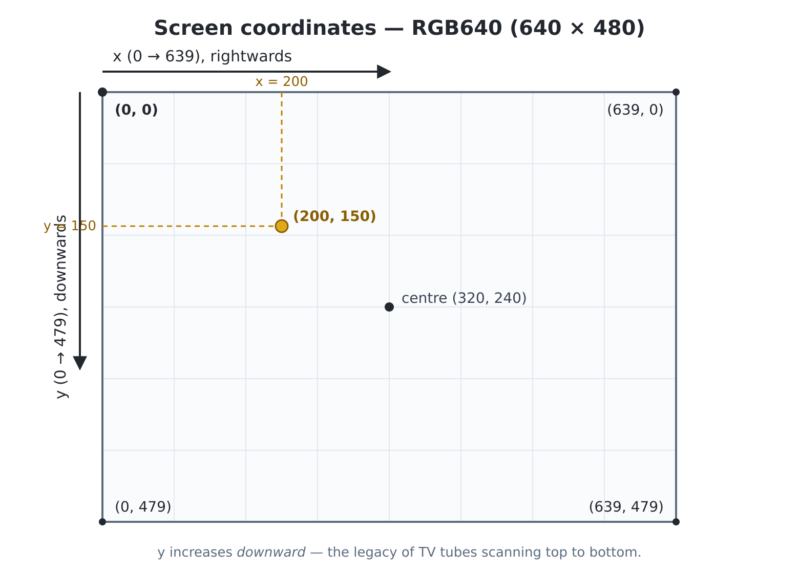
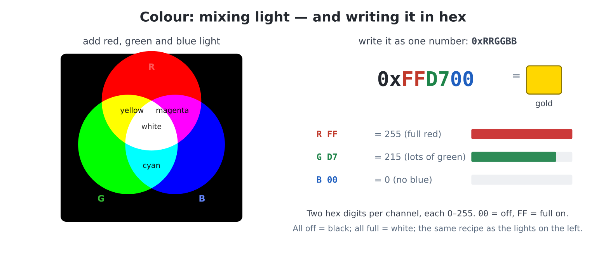

Welcome to Part III. Part II handed you the language; the next seven chapters hand you the machine — screen, images, sprites, sound, and every way a human can poke it. No new Python from here to Part IV: just the good stuff, built out of what you know.
Pico Computer 3 specific. Almost everything in Part III —
screen(), thehdmidisplay, the drawing methods, sprites, tile maps,beep(),tone(), the sound and image helpers,keydown(),mouse(),touch()— is this machine’s hardware, wrapped for you. It is not part of standard MicroPython and won’t be found on a bare board. That is the point: this is what turns a chip into a computer. The language you use to drive it — variables, loops, functions, classes — is the portable part; these chapters are the home hardware it drives. A Colour Maximite 2’s MicroPython app has all of it too (Appendix K).
We start with the screen, because you have been drawing on it for six
chapters without ever being introduced. The turtle and
plot() were chauffeur-driven graphics; this chapter gives
you the keys — every pixel, every colour, every font, under your direct
command.
There is no magic between your code and the glass. In the machine’s memory sits the framebuffer: one numbered cell per pixel, each holding a colour. Sixty times a second, the second processor core (chapter 1’s “other brain”, which does nothing else) ships the whole grid to the monitor. That is the entire arrangement — and it explains the two facts that govern all graphics here:
The framebuffer lives in fast memory, and memory is a budget: more pixels means fewer bits left per pixel for colour. So the machine offers six deals:
| Mode | Resolution | Colours | Character |
|---|---|---|---|
hdmi.RGB640 |
640 × 480 | 256 | the all-rounder — the default |
hdmi.RGB320 |
320 × 240 | 65,536 | chunky pixels, gorgeous colour — the games mode |
hdmi.RGB512 |
512 × 300 | 65,536 | widescreen, doubled to 1024 × 600 |
hdmi.RGB1024 |
1024 × 600 | 16 | maximum crispness, palette colour |
hdmi.RGB640_4 |
640 × 480 | 16 | the fast game mode — full detail, half the bytes (chapter 35 explains why that’s a superpower) |
hdmi.RGB320_8 |
320 × 240 | 256 | chunky pixels whose buffers are so small that everything — screen, overlay, backstage copy — fits in fast memory at once (chapters 17 and 35 cash this in) |
Switch with screen(), which remembers your choice across
power-off:
screen(hdmi.RGB320) # try it -- everything suddenly chunky
screen(hdmi.RGB640) # and back
screen() # what am I on? -> (mode, clock)Two practical notes. Monitors take a couple of seconds to lock onto a
new signal — so a program that switches mode should
time.sleep(3) before drawing anything it wants seen (at the
prompt you’re never fast enough for it to matter). And this book teaches
in the default RGB640 — 640 wide, 480 high, 256 colours —
until the games of Part IV give us reasons to move.
This chapter’s examples all follow one opening move:
d = hdmi.fb()hdmi.fb() hands you a
Display object — the framebuffer with a
toolbox of methods bolted on (a class, as you now know full well):
MicroPython’s standard framebuf drawing calls, plus a few
extras of our own. One caution for later: after any
screen() change, call hdmi.fb() again — the
old d describes a screen that no longer exists.
You know this from the turtle’s goto: (0, 0) is
the top-left corner, x runs right, and
y runs down — the legacy of TV tubes scanning top
to bottom, and universal in computer graphics. So in
RGB640, bottom-right is (639, 479); the centre is (320,
240). Better than memorising numbers, ask the machine —
hdmi.width() and hdmi.height() — and your
drawings survive mode changes.

A colour here is three numbers, 0–255 each, for red, green
and blue light mixed together — packed into one value written
in hex: 0xRRGGBB. 0xFF0000 is pure red;
0x000000 all-off black; 0xFFFFFF everything-on
white; 0x8000FF, some red and full blue — violet.

You already met hex-ish notation in the mode names; here it earns its keep: two digits per channel, readable at a glance.
Twenty-two colours come pre-named — the classic MMBasic sixteen
(BLACK, BLUE, MYRTLE,
COBALT, MIDGREEN, CERULEAN,
GREEN, CYAN, RED,
MAGENTA, RUST, FUCHSIA,
BROWN, LILAC, YELLOW,
WHITE) plus GRAY, LITEGRAY,
ORANGE, PINK, GOLD and
SALMON. They are ordinary variables holding
0xRRGGBB numbers — print(hex(GOLD)) if you’re
curious.
Now the one rule everyone forgets once: the drawing methods
speak native pixel format, not RGB. Each mode stores colour its
own way (256-colour bytes, 16-bit words…), so a 24-bit RGB value must be
converted on its way in — that is d.colour(...):
d = hdmi.fb()
ink = d.colour(GOLD) # or d.colour(0xFFD700), same thing
d.fill(ink)Forget the wrapper and nothing crashes — you just get weird
colours, because your RGB number was misread as native bits. If
your gold comes out swamp-green, you know what you skipped. (In
RGB640’s 256 colours, d.colour picks the
nearest match; the 65,536-colour modes get you closer to exact.)
Coming from MMBasic: the colour names are MMBasic’s own sixteen, and
RGB(255, 215, 0)is0xFFD700— or literallyd.colour(255, 215, 0), which is accepted too. The extra step MMBasic didn’t have isd.colour()’s conversion; MMBasic did that behind the curtain.
Everything draws through d. The core set:
| Call | Draws |
|---|---|
d.fill(c) |
the whole screen, one colour |
d.pixel(x, y, c) |
one pixel (omit c to read the pixel) |
d.line(x1, y1, x2, y2, c, w) |
a line, w pixels thick |
d.rect(x, y, w, h, c) /
d.fill_rect(...) |
rectangle, outline / solid |
d.rbox(x, y, w, h, r, c, fill=None) |
rounded rectangle, optional fill |
d.ellipse(x, y, rx, ry, c, True) |
ellipse at centre x,y; a sixth argument
True makes it solid (leave it off for an outline) |
d.arc(x, y, r1, r2, a1, a2, c) |
a solid ring segment, angles in degrees (0° = up, clockwise;
a1 == a2 = full ring) |
d.bezier(points, c) |
a smooth curve through (x, y) control points |
d.flood(x, y, c) |
paint-bucket fill from a point |
Coming from MMBasic:
Displayis two toolboxes in one, and it pays to know which you’re holding.pixel,rect,fill_rect,ellipseandpolyare MicroPython’s own standardframebufcalls, unchanged — documented at docs.micropython.org, positional only, and where they take a “fill” it is aTrue/Falseflag, not a colour. MMBasic’sCIRCLE x, y, r, , , c, fillended in a fill colour; here it’sd.ellipse(x, y, r, r, c, True)— solid, inc. Two traps follow. Writingf=Trueby name is aTypeError(“function doesn’t take keyword arguments”). And a colour dropped into that slot doesn’t fill with it — any non-zero number just counts as “yes, fill”, inc(andBLACK, being 0, counts as “no”). For a disc with a contrasting edge, draw it solid in the fill colour, then again as an outline in the edge colour. The extras we added —rbox,arc,bezier,flood, the thickline, andtext’sfont=— are ours, so those do take keywords and, where it makes sense, a fill colour.
Try a build-up at the prompt — a landscape in six lines:
d = hdmi.fb()
d.fill(d.colour(0x87CEEB)) # sky
d.fill_rect(0, 380, 640, 100, d.colour(MIDGREEN)) # ground
# sun (full disc)
d.arc(500, 90, 0, 40, 0, 0, d.colour(YELLOW))
# mountain, left slope
d.line(0, 380, 240, 200, d.colour(GRAY), 4)
# right slope
d.line(240, 200, 480, 380, d.colour(GRAY), 4)
# snow... whole mountain
d.flood(240, 300, d.colour(LITEGRAY))Note the working style: shapes for structure, flood to
colour enclosed regions in — a colouring book you also drew the outlines
for. (And notice arc moonlighting: radii from 0 with
a1 == a2 makes a filled circle.)
d.text(s, x, y, c) writes in a plain 8×8 font, fine for
labels. For anything with presence, the machine carries nine
bitmap fonts — MMBasic’s own, same numbers — selected with
font=, enlarged with scale=:
d = hdmi.fb()
d.text("Hello", 20, 20, d.colour(WHITE), font=3) # 16x24
# 8x12, 4x size
d.text("BIG", 20, 60, d.colour(YELLOW), font=1, scale=4)
# the digits font
hdmi.text("12:04", 20, 130, d.colour(GREEN), -1, 1, 6)The ones you will actually reach for: 1 (8×12, the
console font), 3 (16×24, headings), 5
(24×32, posters), 6 (32×50 — digits and :
only, born for clocks and scores), 7/8 (small
and tiny, for labels). The full table is in the User Manual, section
5.
Two facts make layout arithmetic easy. Text backgrounds are
transparent by default (bg=-1) — glyphs
land on whatever is already drawn; pass a colour as bg to
get a solid strip instead. And every font is
fixed-width, so a string’s width is just
len(s) × width × scale — which makes centring a formula
rather than an art:
d = hdmi.fb()
msg = "GAME OVER"
w = len(msg) * 16 * 2 # font 3, scale 2
hdmi.text(msg, (hdmi.width() - w) // 2, 200, d.colour(RED), -1, 2,
3)A full-screen composition — frame, headline, flourishes — and proof
that “design” is loops and arithmetic wearing a beret.
edit("poster.py"):
d = hdmi.fb()
W = hdmi.width()
H = hdmi.height()
PAPER = d.colour(0x102040)
INK = d.colour(WHITE)
TRIM = d.colour(GOLD)
GLOW = d.colour(CYAN)
d.fill(PAPER)
# double frame
d.rbox(8, 8, W - 16, H - 16, 18, TRIM)
d.rbox(14, 14, W - 28, H - 28, 14, GLOW)
# headline, centred (font 3 = 16 wide, scale 2)
name = "ADA'S WORKSHOP"
w = len(name) * 16 * 2
hdmi.text(name, (W - w) // 2, 56, INK, -1, 2, 3)
# a ribbon of two bezier curves
d.bezier([(40, 200), (W // 4, 140), (3 * W // 4, 260), (W - 40,
190)], GLOW)
d.bezier([(40, 210), (W // 4, 150), (3 * W // 4, 270), (W - 40,
200)], GLOW)
# a row of medals: ring + hanger, spaced by loop arithmetic
for i in range(5):
x = 80 + i * (W - 160) // 4
d.arc(x, 330, 24, 30, 0, 0, TRIM)
d.fill_rect(x - 2, 296, 4, 12, TRIM)
# small print (default font, transparent bg)
msg = "est. 2026 -- all robots welcome"
w = len(msg) * 8
hdmi.text(msg, (W - w) // 2, H - 60, d.colour(LITEGRAY))
save_image("poster.bmp")The last line is worth the chapter on its own:
save_image writes the framebuffer to a BMP file — your
poster is now data, copyable to the SD card, viewable in
fm, printable from a PC. Redesign it around your own name:
change the palette, add medals, replace the ribbon. (Console text will
scribble over your masterpiece when the prompt returns —
run it again any time, or re-save_image
first.)
Chapter 12 made programs that remember; here is a picture that
keeps itself true — the battery-backed clock of chapter 1,
given a face. edit("clockface.py"):
import time
d = hdmi.fb()
W = hdmi.width()
H = hdmi.height()
BG = d.colour(0x101828)
RING = d.colour(GOLD)
DIGITS = d.colour(WHITE)
d.fill(BG)
cx = W // 2
cy = H // 2
# font 6 is 32x50: "HH:MM:SS" is 8 characters
tw = 8 * 32
x0 = cx - tw // 2
y0 = cy - 25
while True:
h, m, s = gettime()[3:6]
# erase old digits
d.fill_rect(x0, y0, tw, 50, BG)
hdmi.text(f"{h:02}:{m:02}:{s:02}", x0, y0, DIGITS, -1, 1, 6)
# erase the ring
d.arc(cx, cy, 150, 158, 0, 0, BG)
if s:
# sweep: 6 deg per second
d.arc(cx, cy, 150, 158, 0, s * 6, RING)
time.sleep(1)Study the two techniques, because between them they animate half the
universe. The eraser trick: to change something, first
paint its old self out in the background colour (fill_rect
over the digits, a background-coloured ring), then draw the new. And
state → angle: each second is 360/60 = 6°, so the gold
ring sweeps like a second hand — geometry driven by
gettime(), the zero-index slice [3:6] picking
hour, minute, second out of the time tuple.
Run it. It ticks. Ctrl-C when you tire of the majesty — and know that
the proper flicker-proof machinery (this one blinks, ever so
slightly, at each erase — and the console’s own cursor photobombs from
wherever the prompt left it) is exactly chapter 17’s subject. Some
readers will already be planning /main.py-ing it beside the
bed; chapter 29 adds the alarm.
Coming from MMBasic: the whole drawing set maps one-to-one —
CLSisd.fill(),PIXEL/LINE/BOX/RBOX/CIRCLE/ARCare the methods above (ARC’s angles behave identically, 0° up, clockwise),TEXTishdmi.text, and the font numbers are your font numbers.
0xFF0000,
0x00FF00, 0x0000FF in turn, then mix your own
sunset orange and compare it with the stock ORANGE
(print(hex(ORANGE)) shows the recipe you are chasing). Then
deliberately skip d.colour() once and admire the
swamp.for over range(0, 640, 40)
for the top and bottom edges gets you most of the way. Then vary
w by position.hdmi.fonts() (it returns
(number, width, height, ...) tuples — chapter 10!) and
print each font’s own number in itself, one per row, using the
height from the tuple to step down the screen.flood — including one
deliberate leak (a gap in an outline) to learn how flood escapes. Ctrl-C
stops a runaway flood politely.hdmi.test(), but yours, and working in every mode (nothing
hard-coded: width() and height() everywhere).
Switch modes and run it in each.BLACK corner to corner, then flood every
enclosed region in a random colour (random seed points; skip any pixel
that isn’t background — d.pixel(x, y) reads when
you omit the colour). Save the best one.draw_score(points, lives) in your own library:
right-aligned font-6 score (fixed-width maths), a row of heart-ish
arc discs for lives, and the eraser trick inside so it can
be called every frame. You are writing Part IV’s HUD — file it somewhere
safe.fill_rect grids), a bezier skyline, the moon
an arc disc partly eclipsed by a BG-coloured
one. Compare programs: where was the turtle better? (Genuine question —
pathwork is nicer in places. Right tool, right job.)